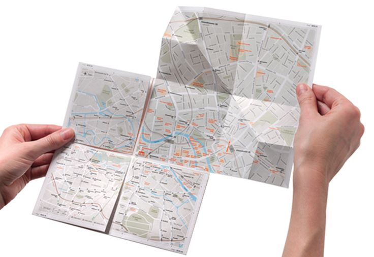
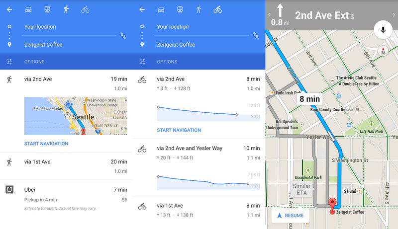

Spatial Information Systems
空间信息系统
Created by Dr.-Ing. Lu Liu (刘露)
Database Research Group,
Department of Information Engineering,
College of E&E, NUDT
cell phone: 13786143640, e-mail: luliu@nudt.edu.cn
## Why does SIS/GIS Matter?
- Location is **critically important** to human being
- Geographic problems are location-related
- spatial scale
- purpose
- temporal scale
- Spatial is special
- Spatial Information Systems (SIS) a.k.a Geographic Information Systems (GIS)
- Geographic, Spatial, Geospatial
## What are we expected to learn?
- Basic principles in GIS
- Basic techniques in GIS
- Basic usage of mainstream GIS software
- Deal with simple geographic problems with GIS
- Share stories with GIS
## The Geospatial Revolution
- ...is transforming
- how we navigate
- how we make decisions
- how we share stories
- At present,
- maps are interactive, and embedded in many "smart" things
- spatial information is widely accessible
- spatial information utilization is empowered by new technologies
How we navigate
- 20+ years ago

- At present

Making decisions
- Simple decisions
- Where should we have dinner tonight?
- Harder questions
- What parts of the coast should we evacuate for this impending Hurricane?
Sharing stories
- Geography provides the context for our personal lives
- Pictures, for example, can be easily Geotagged to make maps of your memories
- Even 10 years ago, this was a very cumbersome thing to do, and 20 years ago it was not really possible